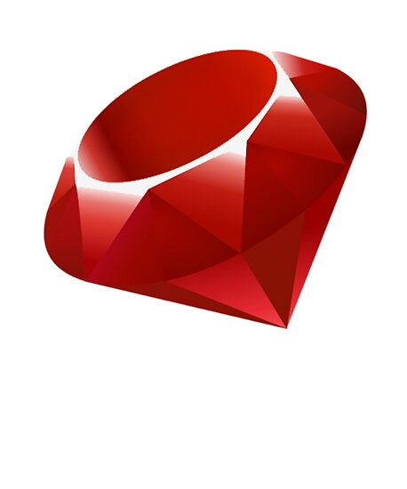

Which Coding Language Should you Learn First?
There are many different coding languages available for different purposes and environments. Although all languages have similarities and switching between languages is common, some thought should be done for where to start.
Interested in coding and want to find out which language you should start with? Take this quiz and find out!
You should start with:
Javascript

Javascript is a language that gives websites life by making them interactive, dynamic, and interesting to use. It can be used to program both front and back-end, however is mainly used for designing websites and apps. It is a very popular and powerful language and can be used in all browsers.
Other Features:
- General-purpose language
- Moderate learning curve
- Used in many larger companies or anywhere webpages are used
- Useful to develop applications quickly with good performance and scalability
- Quick performance
- Generally flexible in coding and solutions
- Can be difficult to debug and maintain if used incorrectly
Ruby
Ruby is a back-end language that is used for web development and other functional programming. It is fun and creative in code but still gets the job done concisely. It can be used to build web apps quickly in fewer lines of code.
Other Features:
- General-purpose language
- Moderate learning curve
- Used in many start-up companies
- Useful for rapid application development or CPU intensive applications
- Slow performance
- Flexible coding and solutions
- Can be time-consuming to debug and difficult to maintain
Python

Python is a very versatile language with many applications in different areas such as data analysis, web applications, game development, and information security. It is one of the most beginner-friendly languages to learn with a clean, intuitive structure that reads almost like English.
Other Features:
- General-purpose language
- Easy learning curve
- Used in scientific and academic fields for analyzing data as well as some big tech companies
- Useful for creating powerful computational libraries
- Slow performance
- Rigid coding rules and solutions
- Can be more pain-free to debug but have more errors when run and take longer to develop projects